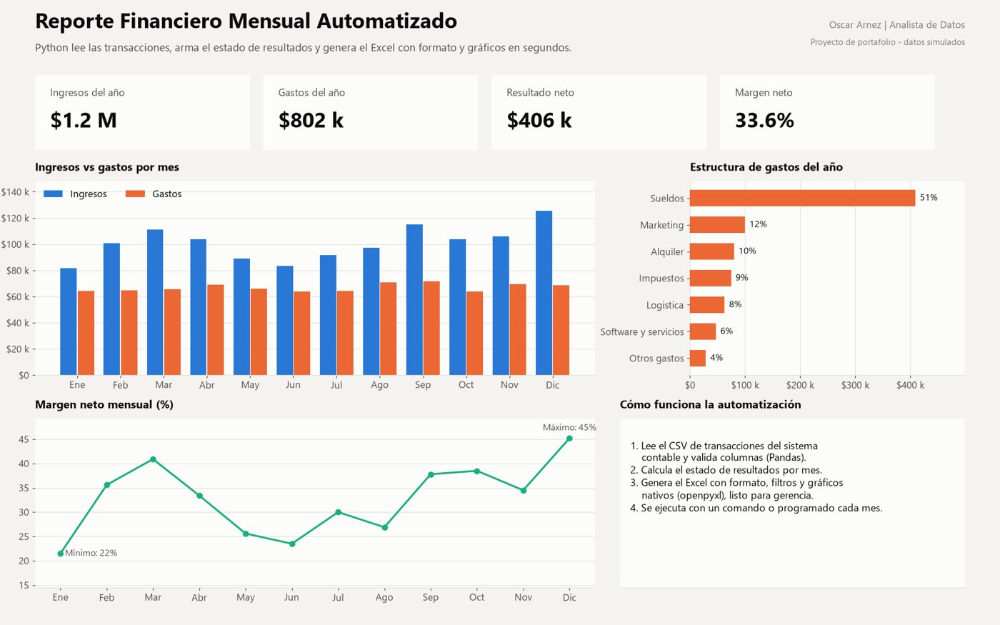

Reporte financiero mensual automatizado en Excel
El área contable de una pyme exporta los movimientos del sistema y pasa horas copiando, sumando y dando formato a un Excel. El script hace ese trabajo completo: valida el archivo, calcula el estado de resultados y entrega un Excel con formato y gráficos que se pueden editar.

Contexto
En YPFB automaticé tareas parecidas y el ahorro de tiempo fue de alrededor de 30 %. Este proyecto reproduce ese tipo de trabajo con datos públicos de ejemplo.
Datos
1.302 movimientos de 2025 (fecha, tipo, cuenta, monto) de una pyme de servicios simulada, con crecimiento mensual de ingresos y campañas de marketing en marzo y septiembre.
Qué hice
- Valida la entrada: si faltan columnas o el tipo de movimiento no es Ingreso o Gasto, se detiene con un mensaje claro.
- Calcula ingresos, gastos, resultado y margen por mes, y el estado de resultados por cuenta.
- Escribe el Excel con openpyxl: tres hojas, encabezados con color, formato de miles, filtros, paneles inmovilizados y dos gráficos nativos.
- Acepta otros archivos por parámetro, así se puede programar para que corra solo cada mes.
Resultados
| Ingresos del año | $1,21 M |
|---|---|
| Gastos del año | $0,80 M |
| Margen neto | 33,6 % |
| Margen más bajo | enero, 21,5 % |
| Margen más alto | diciembre, 45,2 % |
| Peso de sueldos en el gasto | 51 % |
Qué recomendaría
- El margen sube durante el año porque los ingresos crecen y los costos fijos se mantienen.
- Los picos de gasto de marzo y septiembre coinciden con las campañas de marketing, algo que en el reporte manual pasaba desapercibido.
Extracto del código
src/generar_reporte.py
python src/generar_reporte.py \
--entrada movimientos_noviembre.csv \
--salida reporte_noviembre.xlsxVer el proyecto completo en GitHub, con instrucciones para ejecutarlo.